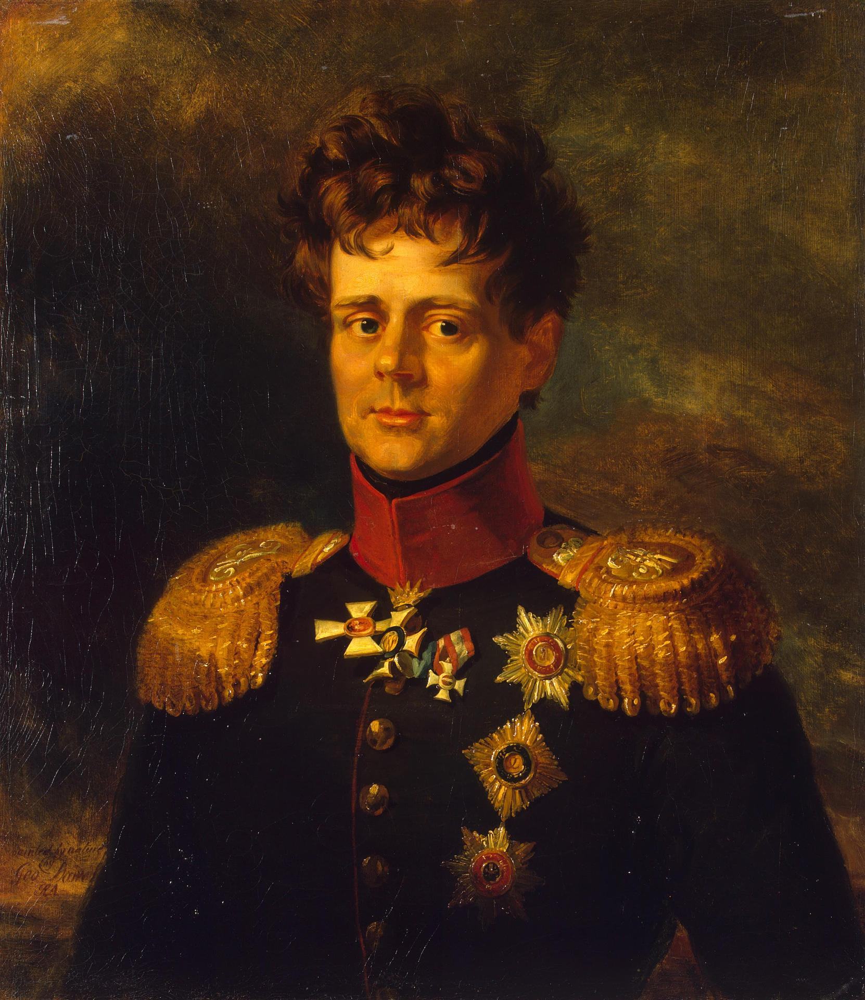
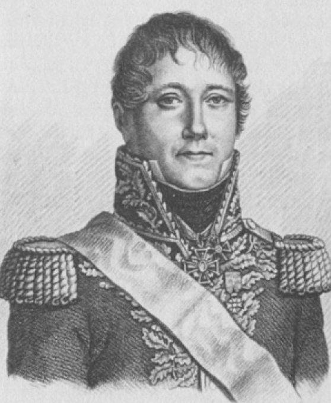
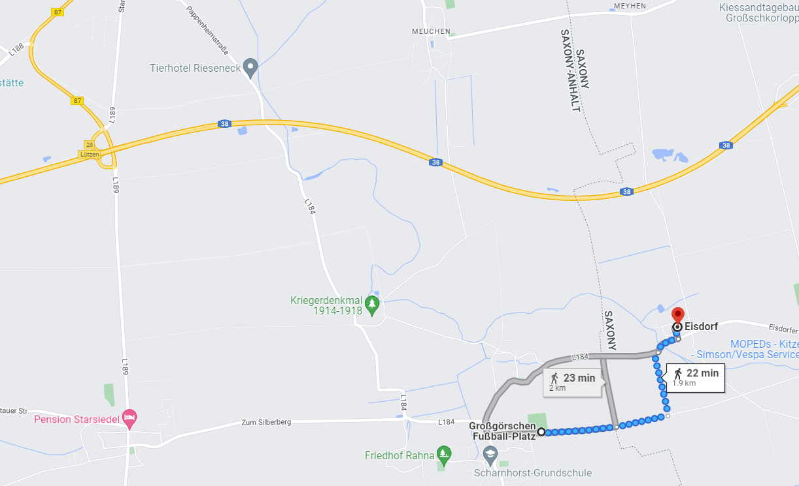

뤼첸 전투 (9) - 외젠(Eugène)과 오이겐(Eugen)의 대결
게시: 2022-10-31T06:30:28+09:00
베르트랑이 서쪽에서 힘겹게 스타지들 마을로 접근하고 있을 때, 나폴레옹이 있던 카야 마을 상황은 좋지 않았습니다. 4시 경에 도착한 러시아 예비군단의 일부 병력들이 전장에 투입되면서 프로이센군이 기세를 올렸기 때문입니다. 그러나 침착하게 상황을 주시하던 나폴레옹은 4시 반 경에 예비대로 있던 신참 근위대(Jeune Garde) 제1 여단을 투입했습니다. 나폴레옹 시대의 전술에서는 예비대가 매우 중요했습니다. 예비대는 최후까지 아껴두었다가 이제 전세를 뒤집거나 돌파구를 마련할 때 투입하면 효과가 만점이었거든요. 이번에도 그랬습니다. 곰가죽 모자를 쓴 근위대 제1 여단이 라뉘즈(Pierre Lanusse)의 지휘 하에 진격을 시작하자 그 뒤를 따라 네의 제3 군단 병사들도 진격을 시작했고, 이들은 오랜 전투에 지친 프로이센군을 밀어내고 결국 라나와 클라인괴르쉔 마을들을 모두 탈환했습니다. 그러나 프로이센군도 결의가 대단했으므로 최후의 1개 마을인 그로스괴르쉔은 뚫지 못했습니다. 나폴레옹도 여기서 전체 근위대를 투입하는 도박은 하지 않았습니다. 연합군에게는 아직 예비대, 즉 러시아군 주력이 충분히 남아있다는 것을 나폴레옹도 알고 있었고, 또 아직 베르트랑과 막도날의 양 측면 공격이 시작되었다는 소식이 없었기 때문이었습니다. 그래서 이후로도 전황은 엎치락 뒤치락하며 애꿎은 병사들만 계속 죽어나갔습니다. 잘 이해가 가지 않는 부분은 이 뤼첸 전투에서의 지휘 체계가 불분명했는지 또는 프로이센군과 러시아군 사이의 소통 또는 협조가 제대로 이루어지지 않았는지, 총사령관인 비트겐슈타인은 측면에서의 위협을 감지하고 4개 마을 전투에서 한발 빼는 듯한 자세를 취했는데, 정작 현장에 있던 요크는 본인 휘하의 새로 도착한 러시아군 조금씩 4개 마을 현장에 투입하며 맹렬히 공격했다는 것입니다. 이렇게 요크가 투입한 새로운 병력이 가세하자 신참 근위대의 활약으로 프랑스군이 탈환했던 라나와 클라인괴르쉔은 또다시 연합군의 손에 넘어갔습니다. 이렇게 다시 전세가 연합군에게 유리하게 넘어가던 시점인 5시 30분경, 클라인괴르쉔 북쪽을 우회하여 나폴레옹이 코너에 몰린 카야 마을을 공격하려던 러시아군의 뷔르템베르크 대공 오이겐 (Friedrich Eugen Carl Paul Ludwig von Württemberg)은 북쪽에서 새로운 프랑스군이 나타난 것을 목격했습니다. 네의 제3 군단 소속으로서 4개 마을의 동쪽 인접 마을인 아이스도르프(Eisdorf)로 뒤늦게 달려다던 마르샹(Jean-Gabriel Marchand)의 제39 사단이었습니다. 나쁜 소식은 몰려다닌다더니, 바로 그때 아이스도르프 동쪽에서는 훨씬 더 큰 규모의 프랑스군이 나타났습니다. 나폴레옹의 의붓아들이자 이탈리아 부왕인 외젠(Eugène de Beauharnais)의 엘베 방면군 소속으로 라이프치히를 향해 가다 전투 소식을 듣고 방향을 돌린 막도날의 제11 군단이었습니다.

(같은 이름이지만 프랑스에서는 외젠, 독일에서는 오이겐, 영국에서는 유진이라고 부르지요. 이 뤼첸 전투의 동쪽 방면에서는 프랑스측의 외젠과 연합군측의 오이겐이 맞붙는 결과를 냈습니다. 그런데 그 연합군측 오이겐인 뷔르템베르크 대공 오이겐은 그 작위로 보나 이름으로 보나 러시아의 발트 해 연안 출신 독일 귀족이 아니라 독일 본토 출신의 귀족처럼 보이고, 실제로 프로이센령 슐레지엔에서 태어난 정통 프로이센 귀족입니다. 그럼에도 불구하고 그는 어려서부터 프로이센이 아닌 러시아군에서 군 경력을 시작했는데 이유는 파벨 1세의 황비인 소피 도로테아(Sophie Dorothea)가 그의 고모뻘이었기 때문이었습니다. 덕분에 파벨 1세의 조카라는 신분으로 러시아군에서 파격적인 승진을 거듭했고, 파벨 1세 암살 직후에는 잠깐 멈칫했으나 1805년 다시 군생활을 시작할 때 고작 17세에 불과했지만 그때 이미 소장 계급이었고 보로디노 전투 등 여러 전투에 참전했습니다. 그는 아버지의 궁정 음악가였던 칼 마리아 폰 베버(Carl Maria von Weber)와 친분이 있었고, 자신도 오페라를 몇 곡 작곡하기도 했습니다. 1829년 오스만 투르크와의 전쟁이 끝난 뒤에는 41세의 나이로 러시아군에서 은퇴하여 프로이센에서 잘 살다가 69세의 나이로 사망했습니다.)

(마르샹 장군입니다. 나폴레옹보다 4살 연상이었던 그는 원래 프랑스 남부 그레노블(Grenoble)에서 변호사로 일하기 시작한 젊은이였는데, 프랑스 혁명이 일어나자 혁명군에 자원하여 대위로 군생활을 시작했습니다. 그는 주로 이탈리아 방면군에서 복무했으나 나폴레옹의 눈에 띄지는 못한 것으로 보아 엄청난 실력을 가진 용사는 아니었나 봅니다. 1805년 네 원수 밑에서 복무하며 눈에 띄는 전공을 세우기 시작했고, 1807년 예나 전투에서 공을 세우며 레종도뇌르 훈장도 받고 백작 작위도 얻었습니다. 그는 스페인에서 싸우다 러시아 전선으로 차출되어 제롬 보나파르트 밑에서 복무했고, 제롬이 이탈한 이후에는 네의 지휘를 받았습니다. 나폴레옹 퇴위 이후엔 부르봉 왕가에게 우대를 받아 고향인 그레노블의 지역 사령관직을 맡았으나, 엘바 섬을 탈출한 나폴레옹이 하필 그레노블로 오자 그를 저지하려다 실패하고 도망쳐야 했습니다. 이후 돌아온 부르봉 왕정은 나폴레옹에게 그레노블을 내준 죄로 기소했으나, 재판 결과 불가항력이었다는 이유로 무죄 선고를 받았습니다.) 뷔르템베르크 대공 오이겐은 급히 방향을 돌려 아이스도르프 마을을 점거하고 연합군의 우익을 지킬 방어선을 구축했고, 사령부에서도 속속 도착하는 러시아군 예비 병력들을 아이스도르프 방면으로 파견했습니다. 그러나 마르샹의 사단과 막도날의 군단의 합동 공격은 '이젠 이길 수 있을 것 같다'라고 생각하던 연합군의 사기를 산산조각 내기에 충분했습니다. 뷔르템베르크 대공 오이겐이 몇 번이고 맹렬히 반격했지만 중과부적이었고, 결국 아이스도르프를 막도날에게 내주고 후퇴해야 했습니다. 이때의 분위기를 가장 잘 말해주는 것이 요크 대공이 남긴 전투 보고서 중 이 공격을 묘사한 부분입니다. "아군이 결정적인 승리를 쟁취하려던 순간, 오후 7시 경 (실제로는 6시 경: 역주) 적의 강력한 군단이 아이스도르프 방면에 나타나 우리의 오른쪽 측면을 위협했는데, 아마도 라이프치히 방면에서 내려온 이탈리아 부왕 (외젠을 지칭: 역주) 휘하로 추정되었다." 비트겐슈타인의 일지에는 이렇게 적혔습니다. "7시 경 (역시 시간대는 다소 잘못된 듯: 역주) 아마 이탈리아 부왕 소속으로 추정되는 새로운 적 군단이 우리의 우익, 즉 그로스괴르쉔과 클라인괴르쉔 사이에 나타났다. 이들은 매우 집요한 공격을 퍼부어 여태까지 우리가 얻어낸 모든 성과를 한꺼번에 뒤집으려 했다. 이때 러시아 보병 예비군단이 현장에 투입되어 우측면에 맹렬한 공격을 받고 있던 요크 장군의 군단들을 지원했다. 러시아 포병대와 요크, 블뤼허, 빈칭게로더의 군단들은 하루 종일 그랬던 것처럼 다시 한번 격렬한 전투에 돌입했고, 이 전투는 밤늦도록 계속되었다. 적은 우익 뿐만 아니라 중앙부의 마을들에서도 공격을 재개했으나 우리는 한치의 땅도 양보하지 않았다." 전투 보고서에 이렇게 '적이 맹공을 퍼부었으나 한치의 땅도 양보하지 않았다'고 적었다는 것은 전황이 매우 불리했다는 이야기일 것입니다. 실제로 아이스도르프를 내준 오이겐 대공은 그로스괴르쉔 마을까지 물러나 거기서 방어선을 쳤는데 상황이 꽤 긴박했나 봅니다. 이 방어선에는 이제 막 도착한 토르마소프의 예비 포병단 뿐만 아니라 서쪽 스타지들 방면에서 마르몽을 견제하던 빌헬름 왕자의 프로이센 예비 기병대까지 불려와 이 방어선의 왼쪽 축을 맡아야 했습니다. 비트겐슈타인이 황급히 여기에 투입할 병력을 찾아 부관을 파견해보니, 볼콘스키 공작이 '천천히 오셔도 됩니다'라고 잘못된 메시지를 보냈던 대상인 코노브니친(Konovnitsyn) 장군조차 이미 전투에 투입되었다 다리에 중상을 입고 쓰러져 있었을 정도로 이 쪽 방면의 상황은 위급했습니다. 비트겐슈타인은 짜르의 동생 콘스탄틴 대공이 '아직 나의 부대는 전투 준비가 안 되었다'라고 항의함에도 불구하고 콘스탄틴 대공의 러시아 근위대를 이 우익 방어선 뒤쪽에 도열시켜 놓아야 했습니다.

(아이스도르프는 전투의 중심인 그로스괴르쉔으로부터 불과 1.5km 정도 밖에 떨어지지 않은, 진짜 인접한 마을입니다. 지도 왼쪽에 붉은 글씨로 표시된 곳은 스타지들 마을입니다.)
비트겐슈타인이 이렇게 있는 병력 없는 병력을 있는 대로 긁어모아 우익에 배치한 보람이 있었습니다. 엘베 방면군 소속 예비 기병대를 이끌고 조금 뒤에 현장에 도착한 외젠은 연합군의 이 우측 방어선을 살펴보고는 여기에 공격하는 것을 일단 포기했습니다. 막도날의 군단도 기껏해야 1만8천 정도에 불과했으므로, 마르샹의 사단을 합한다고 해도 이들만으로 연합군의 우익을 돌파할 수는 없다고 판단되었기 때문이었습니다. 게다가 중요한 것이 하나 더 있었습니다. 바로 어둠이었습니다.
Source : The Life of Napoleon Bonaparte, by William Milligan Sloane Napoleon and the Struggle for Germany, by Leggiere, Michael V
https://en.wikipedia.org/wiki/Duke_Eugen_of_W%C3%BCrttemberg_(1788%E2%80%931857) https://www.frenchempire.net/biographies/marchand/ https://www.timeanddate.com/sun/germany/leipzig